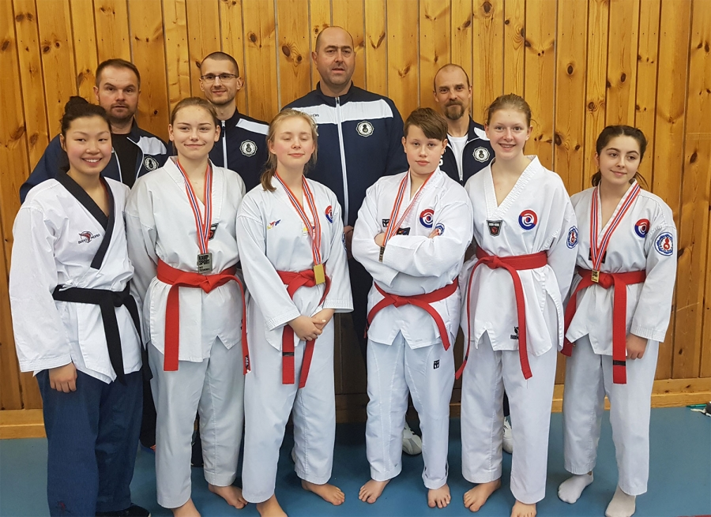
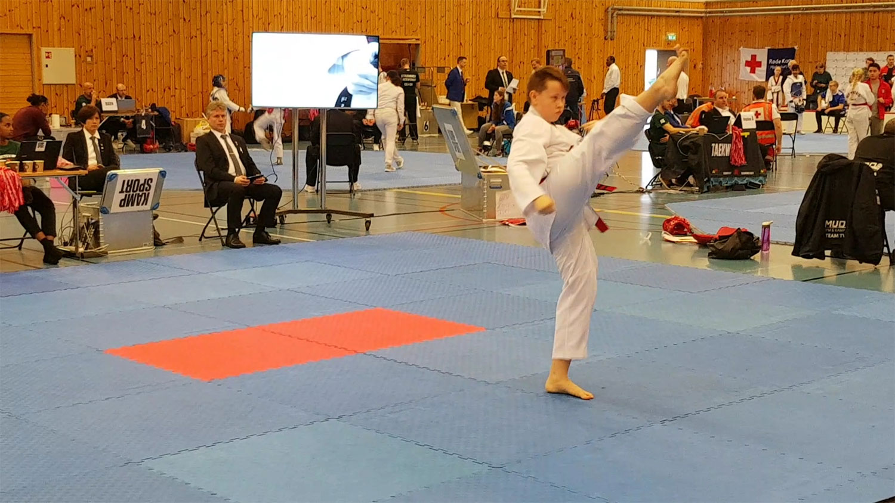
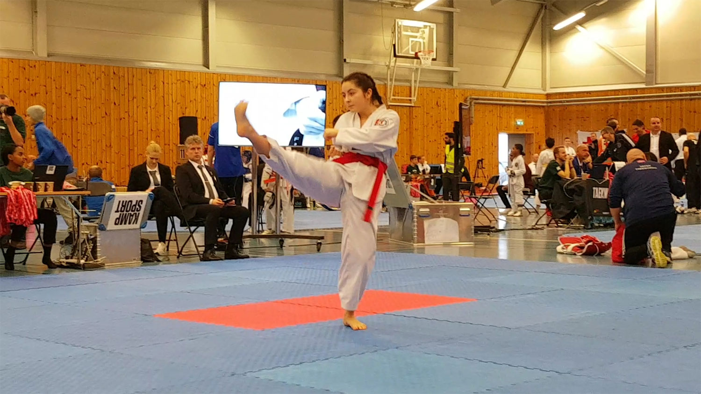

Innlegg
TEAM RINGERIKE TKD GJENOPPSTÅR: KLINTE TIL MED GULL, SØLV OG BRONSE

Skrevet av medlem Trond Schieldrop og først publisert i RingeriksAvisa:
https://www.ringeriksavisa.no/arkiv/item/3997-team-ringerike-tkd-gjenoppstar-klinte-til-med-gull-solv-og-bronse
Etter 10 års fravær gjenoppsto Team Ringerike Taekwondo (TKD) på lørdagens Østlandscup (ØC) og nasjonale cup (NC) på Bygdøy. Klubbens juniorutøvere sanket inn gull, sølv og bronse i konkurranse med utøvere fra hele landet. – En fantastisk prestasjon, sier en imponert master Geir Karlsen (4. Dan) i klubben.
Instruktør Reinhardt G. Skøien (2. Dan) i klubben deler Karlsens superlativer. – I mønster (poomse) klinte Ida Helèn Bye til med gull, Syver Bakken Fines og Charlotte Slettebakken med sølv, og Nora Henriksen med bronse. Helene Mala Haga og Lisa Marie Schieldrop kom på sterke fjerde plasser. Bortsett fra Lisa Marie er det ingen av utøverne som har deltatt i en slik konkurranse tidligere. Tilbakemeldingene fra utøverne er at de ønsker å delta på neste NC konkurranse i mai. Hele utøvergruppa gjorde en kjempeinnsats, understreker han.
God prestasjon
Lisa Marie Schieldrop, som har hatt et lengre skadeavbrekk presterte godt. – Å dra i land en 4. plass i sin klasse med 9 dyktige utøvere fra hele landet står det respekt av, sier Skøien. - Resultatet var langt over klubbens forventninger tatt i betraktning den tunge oppkjøringen hun har hatt frem til konkurransen på Bygdøy.
Høste konkurranseerfaring
– For oss var det en seier å delta og oppnå slike gode resultater, sier Karlsen. Han kan fortelle at målsetningen med deltakelsen på Bygdøy var at konkurransegruppa skulle høste konkurranseerfaring og skape «tenning» for mønsterkonkurranser. Likeså viktig var det å skape entusiasme blant våre øvrige klubbmedlemmer for å delta i senere konkurranser. For mange kan det oppleves skremmende å gå ut på matta for første gang med flere tilskuere på tribunen, og et dommerpanel som vurderer dine ferdigheter. Våre utøvere mestret denne situasjonen meget bra. De klarte å gjøre det utrygge til trygt.

Utøvernes ære
Skøien påpeker at det var klubbens utøvere som klarte å gjøre den tunge jobben med å sanke inn gull, sølv og bronsemedaljer. – Som trenere og coacher kom vi med råd og tips til hver enkelt utøver. Vår oppgave er å legge forholdene til rette slik at utøverne klarer å oppnå så gode resultater som mulig. Det viste de på lørdag. Takk til coach-teamet bestående av Geir Karlsen, Artjom Stalmakov, Reinhardt Skøien og Øistein Røste som klarte å skape den riktige motivasjonen i konkurransegruppa. Vår oppgave var å vise dem veien, som hver enkelt måtte gå selv, sier han til slutt.
